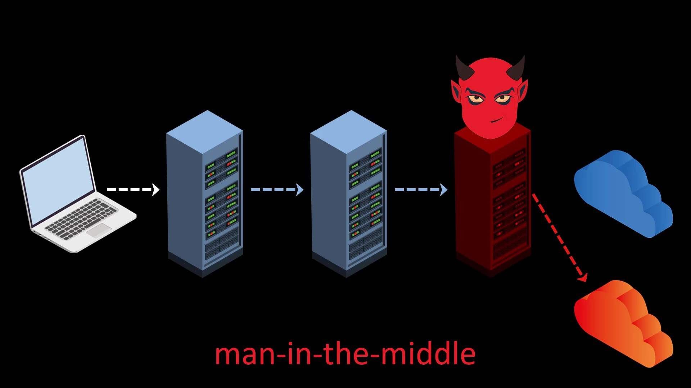
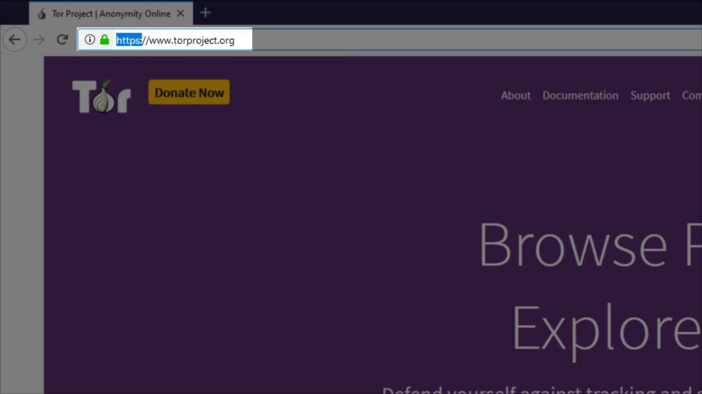

Malicious Exit Nodes
As we mentioned earlier, the servers of the Tor network are based on volunteering, and we never know who these volunteers really are and for what purpose they are providing this server resource. As a result of various tests, it is estimated that approximately 2.5% of the exit nodes of the Tor network are provided by malicious people. Although regular tests are carried out to detect malicious servers and removed them from the Tor network, it is a fact that this method does not provide a definitive solution.
What can malicious exit nodes do?
- Since it is the exit node, it does not know directly who you are, but it knows which web address you want to reach. However, you run the risk of revealing your real identity, directly or indirectly, through your communication or internet behavior.
- In addition to spying on your data, malicious Tor exit nodes can often perform a man-in-the-middle attack (MitM) that redirects your page request to a fake website

How can we be protected?
- As long as you connect to secure SSL encrypted (https..) websites, your data stays safe and cannot be compromised by a fake exit node.

- Being aware of the man-in-the-middle attacks, it is important for your security to check the address you want to go to and be aware of the sensitivity of the information you enter. Since you are using the Tor network, you should always be in control of all your steps, without thinking that you are completely safe.